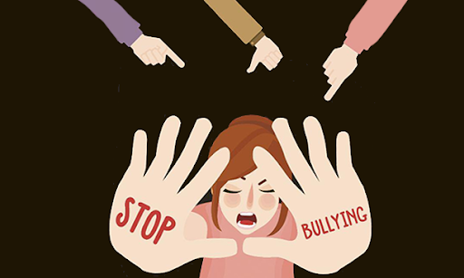

BULLYING EN LA SOCIEDAD

El acoso escolar o bullying es la exposición que sufre un niño a daños físicos y psicológicos de forma intencionada y reiterada por parte de otro, o de un grupo de ellos, cuando acude al colegio. El acosador aprovecha un desequilibrio de poder que existe entre él y su víctima para conseguir un beneficio (material o no), mientras que el acosado se siente indefenso y puede desarrollar una serie de trastornos psicológicos que afectan directamente a su salud o incluso, en situaciones extremas, conductas autodestructivas.
 Más informaciónLas causas que originan el bullying dependen de cada caso concreto, aunque suelen tener unas características comunes: el acosador escolar no tiene empatía y, por tanto, es incapaz de ponerse en el lugar del acosado y ser sensible a su sufrimiento.
El origen de la violencia del acosador puede venir causado por problemas sociales o familiares, que pueden provocar que el niño desarrolle una actitud agresiva y que en la adolescencia sea violento.
Otros factores que pueden incidir son una situación socioeconómica desfavorable en casa, poca organización en el hogar o tensiones entre los padres.Los motivos por el que se produce el bullying responden básicamente a una predisposición a la violencia en el agresor por motivos psicológicos y de personalidad, y un entorno familiar y social con antecedentes de violencia o de justificación hacia la misma. Una deficiente pedagogía sobre lo que es el bullying y el deber de denunciarlo puede empujar a los compañeros de la víctima a actuar como sujetos pasivos, reforzando de esta manera este deplorable comportamiento y ayudando a que se perpetúe, sin que pueda ser atajado a tiempo por los profesores o padres.

Los profesores y los padres o tutores de los adolescentes tienen que llevar a cabo medidas que impidan la aparición de nuevos casos de bullying. Para conseguirlo deben identificar los factores de riesgo que los generan y actuar sobre ellos.

Llevar a cabo actuaciones que dificulten que el maltrato se siga produciendo y que el adolescente tenga mayores problemas. En este sentido, es necesario que exista una relación de comunicación fluida entre las familias y el profesorado del centro.

Conocer a sus amigos y compañeros de clase, y la relación que tiene con ellos, es importante para saber su adaptación con el resto de niños. También es recomendable hablar con los profesores para saber cómo es el trato del niño con los demás compañeros.
En muchas ocasiones, los acosadores son personas que también han sido acosadas.
- Covadonga Díaz-Caneja